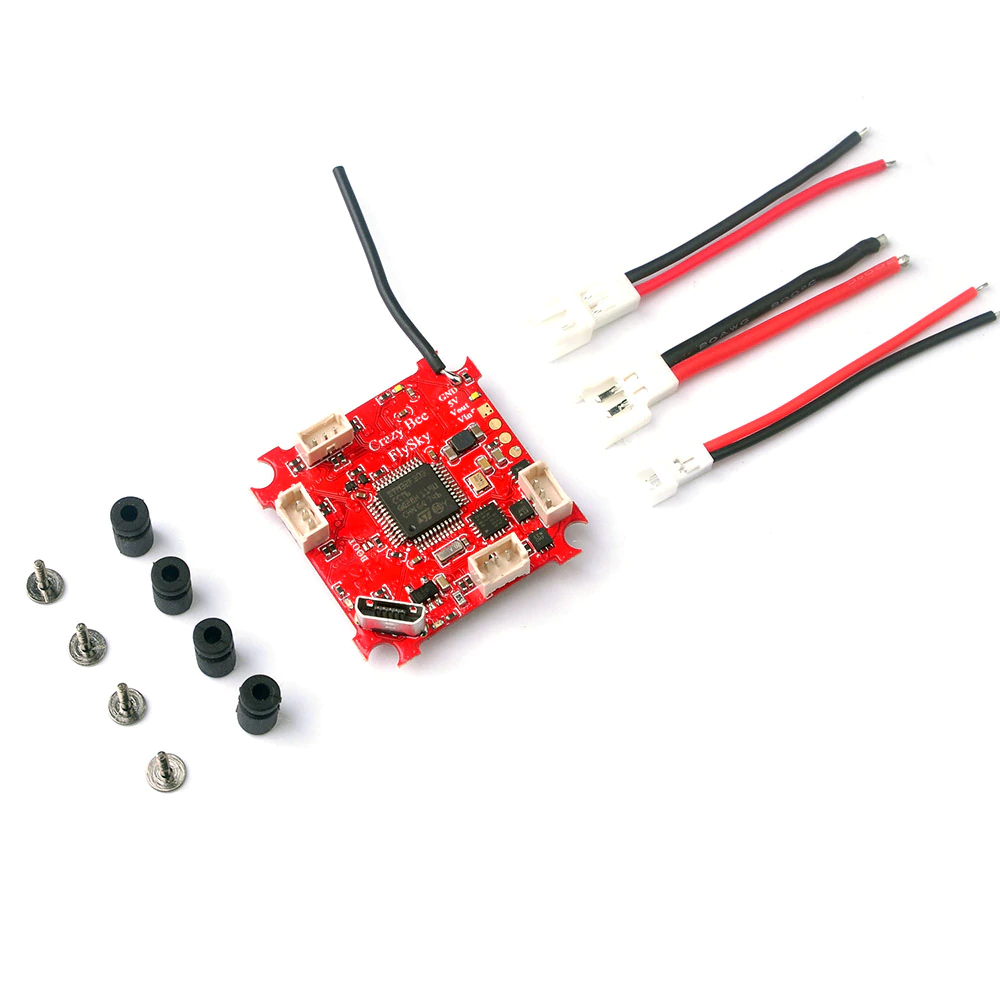

Flight Controller Targets
This codebase currently supports several targets using the STM32F411, STM32405 or STM32F303x processors. A target is simply the name of a hardware configuration (processor and peripherals) that was defined for use with Betaflight. Different flight controller boards can be made that correspond to a given target.
The target names I'm using come straight from Betaflight. The following flight controller targets are currently defined:
OMNIBUSF4- This uses the STM32F405 processor which runs at 168MhzNOX- This uses the STM32F411 processor which runs at 98Mhz or 100Mhz (we must use 98Mhz for proper USB Virtual Com Port support)MATEKF411RX- This uses the STM32F411 processor. At this time only the "HappyModel Crazybee F4 Lite 1S FlySky" flight controller is currently supported.CRAZYBEEF3FS- This uses the STM32F303x processor. It runs at 72Mhz, not fast enough for RPM filtering.OMNIBUS- This uses the STM32F303x processor. Support for this has yet to be completed.
Note: The Makefile defaults to building for the CRAZYBEEF3FS target but this can be overriden when invoking the makefile by specifying the TARGET on the command line like so:
mingw32-make.exe -j12 TARGET=MATEKF411RX flash
The above command will build the MATEKF411RX target and flash the build onto the flight controller board.
For more details on how to build and flash (and develop) this software read the Develop page
If using Visual Studio Code then you can click on the "Run build task" icon in the status bar...

..or use the Ctrl-Alt-T combination to bring up this menu which will let you clean, build and flash for any of the supported targets:

MATEKF411RX
The "HappyModel Crazybee F4 Lite 1S FlySky" flight controller is a MATEKF411RX target board. This board is used on the Mobula 6.
This flight controller (and target) also supports an FrSky SPI receiver as well. However I only possess the FlySky version and therefore only built support for the AFHDS/AFHDS2A receiver.

This is an easy board to use with SilverLite-FC since the RX is on-board and very little configuration is needed.
CRAZYBEEF3FS
This is an older F3 processor based flight controller. It was one of the first whoop boards that featured many on-board features such as: OSD, SPI receiver, current metering, BLHeli escs.
Like the Mobula6 board, there is a version of it available with FrSky support. But I don't have one of these so haven't implemented support for that version.

This is an easy board to use with SilverLite-FC since the RX is on-board and very little configuration is needed.
NOX
I've been using the "Play F4" flight controller (sometimes described as "JHEMCU Play F4" or "JMT Play F4"). This board is a NOX target. This is what it looks like:


By examining the Betaflight source code and target.h files for this Betaflight target (as well as using the resource and resource list commands) we can learn
how the STM32 processor interfaces with the MPU, OSD and other peripherals.
For example, the following pads of the Play F4 board map to the STM32 pins:
On top side of board are:
- 3.3v
- DSM/IBUS/PPM - Goes directly to PB10 (verified with multimeter)
- SBUS - Coupled thru a switchable inverter (controlled by PC14) and then (I think) to PA3 (USART2 RX)
- 5v
- GND
- TX1 - Goes directly to PB6 (USART1 TX)
On back (bottom) side of board are:
- RX1 - Goes directly to PB7 (verified with multimeter) (USART1 RX)
- TX2 - Goes directly to PA2 (verified with multimeter) (USART2 TX)
- LED_STRIP - Goes directly to PA0 (verified with multimeter)
- BZ- - Does not seem to be directly tied to STM32, probably uses a driver transistor to PC13
This information is important if you want to change which pads to use to interface to your transceiver board (NRF24L01, XN297, XN297L or LT8900). More information can be found in the Transceiver Modules section.
Adding support for new targets
This section will contain my notes on what is required to add support for new targets. The notes are largely based on what I performed for adding the MATEKF411RX and CRAZYBEEF3FS targets.
NOTE: You really don't need to read all of this. It's just here so I can remember what is needed when setting up a new target.
The project folder structure contains a Targets folder that in turn contains subfolders for each of the targets (such as NOX, OMNIBUSF4). In turn these folders contain the following:
TARGET_NAME.ioc- This is an STM32CubeMX project file used to configure the STM32 and its peripherals.. TheTARGET_NAMEwill be something likeNOXorOMNIBUS, etc.- Core - STM32CubeMX generated source files
I want to add support for the Mobula6 flight controller which is the "HappyModel Crazybee F4 Lite 1S" board.
In Betaflight it is known as the MATEKF411RX target. So I would create a new folder with that name within
our Targets folder.
Using STM32CubeMX you'll want to configure the various pins and perhipherals of the STM32 chip:
- Under "Project Manager":
- "Project" -> "Application Structure" - "Advanced"
- "Code Generator"
- "Toolchain / IDE" - "MDK-ARM"
- "Min Version" - "V5"
- Set clock config as appropriate (making sure you choose options that allow VCP to work correctly)
- Set "HCLK" to desired clock frequency (72, 96, 100, 120, etc)
- This will adjust sources (Use HSE instead of HSI, etc)
- Set "HCLK" to desired clock frequency (72, 96, 100, 120, etc)
- Configure TIM2. It is used for
gettime()- "Clock Source" - "Internal Clock"
- "Counter Settings"
- "Prescaler" - Set to match clock Mhz
- "Counter Period" - 0xFFFFFFFF
- Configure ADC1. It is used for monitoring battery voltage
- To configure ADC, look within Betaflight
target.hfor VBAT_ADC_PIN and then in "Pinout view" select that pin and configure it for ADC.- For F3 this results in enabling ADC1_IN1
- Then in "ADC1 Mode and Configuration" for "IN1" choose "IN1 Single-ended". Also tick the "Vrefint Channel" checkbox.
- Under "Parameter Settings"
- Under "ADC_Settings"
- "Clock Prescaler"
- For F4 - "PCLK2 divided by 8"
- For F3 - "Synchronous clock mode divided by 4"
- "Resolution" - "ADC 12-bit resolution" (this should already be set)
- "Scan Conversion Mode" - "Enabled". NOTE: This won't be selectable yet, we'll do it later
- "Continuous Conversion mode" - "Enabled"
- "DMA Continuous Requests" - "Enabled"
- "Clock Prescaler"
- Under "ADC_Regular_ConversionMode"
- F3 - "Enable Regular Convresions" - "Enable". NOTE: This should already be setup
- "Number of Conversion" - "2". NOTE: THIS will change "Scan Conversion Mode" from "Disabled" to "Enabled"
- Expand Rank 1 and..
- Ensure "Channel" is set to "Channel 1"
- "Sampling Time" - "181.5 Cycles"
- Expand Rank 2 and..
- Ensure "Channel" is set to "Channel Vrefint"
- "Sampling Time" - "181.5 Cycles"
- Under "ADC_Settings"
- Under "DMA Settings" click "Add" and then for: DMA Request, Channel, Direction, Priority
- ADC1, DMA1 Channel 1, Peripheral To Memory Low
- Under "DMA Request Settings" for this new entry:
- "Mode" - "Circular"
- "Increment Address" - Tick only the "Memory" checkbox
- "Data Width" - "Peripheral"->"Word", "Memory"->"Word"
- For F3 this results in enabling ADC1_IN1
- To configure ADC, look within Betaflight
- Configure LED pin (check Betaflight/target.h file)
- Configure for GPIO_Output: "GPIO mode" to "Output Push Pull", "Maximum Output Speed" to "High"
- Label it "LED" so that "LED_Pin" is generated since it is used by code
- For F3 targets (only), configure USB
- Under "Pinout & COnfiguration, chooose "Connectivity" then select "USB"
- Under "USB Mode and Configuration"->"Mode" tick the "Device (FS)" checkbox
- Under "Middleware" select "USB_DEVICE"
- Set "Class for FS IP" to "Communication Device Class (Virtual Port Com)"
- Under "Pinout & COnfiguration, chooose "Connectivity" then select "USB"
- For targets that implement internal SPI AFHDS/AFHDS2A receivers configure the following GPIO pins
RX_SPI_LED_PIN, "GPIO output level" == "Low", "Maximim output speed" == "High"RX_SPI_BIND_PIN, "GPIO mode" == "Input mode", "GPIO Pull-up/Pull-down" == "Pull Up"RX_SPI_EXTI_PIN, "GPIO mode" == "External Interrupt Mode with Rising edge trigger detection"- NOTE: Examine NVIC for this pin, it should be enabled. Also "NVIC Interupt Table" should be "EXTI line[15:10] interrupts", if it isn't then you must edit rx_a7105.c`
- Configure GPIO pins for soft SPI support of the MPU. Examine Betaflight
target.h(look forGYRO_1_CS_PINandGYRO_1_SPI_INSTANCE). NOTE: The SilF4ware code that was forked from referred to the MPU SPI pins with "SPI2_" prefix. Don't let that confuse you into thinking we're using SPI2 of the STM32 device (it often isn't).- "GPIO output Level" - "Low"
- "GPIO mode" - "Output Push Pull"
- "GPIO Pull-up/Pull-down" - "No pull-up and no pull-down"
- "Maximum output speed" - "High"
- Use the following labels:
SPI_MPU_SSSPI2_CLKSPI2_MOSI
- For SPI MISO:
- "GPIO mode" - "Input Mode"
SPI2_MISO
- Configure GPIO pins for ESCs
- "GPIO output Level" - "Low"
- "GPIO mode" - "Output Push Pull"
- "Maximum output speed" - "High"
- Use the following labels:
ESC1ESC2ESC3ESC4
- Under "System Core" select "NVIC" and under "Code genearation" untick the "Generate IRQ handler" checkboxes for these:
- "Hard fault interrupt"
- "Memory management fault"
- "Pre-fetch fault, memory access fault"
- "Undefined instruction or illegal state"
- TIM1 (with DMA) is used for implementing DSHOT.
- Configure TIM1
- "Clock Source" - "Internal Clock"
- "Channel1" - "Output Compare No Output"
- "Channel2" - "Output Compare No Output"
- No changes/configuration are needed under "Parameter Settings"
- Under "DMA Settings" click on "Add" and create the following
- For F4 devices (DMA Request, Stream, Direction, Priority):
- TIM1_UP, DMA2 Stream 5, Memory To Peripheral, High
- TIM1_CH1, DMA2 Stream 1, Memory To Peripheral, High
- TIM1_CH2, DMA2 Stream 2, Memory To Peripheral, High
- Note: This DMA2 Stream 2 will require we provide our an irq handler.
- Go back to "System Core"->"NVIC"->"Code Generation" and untick the checkbox for "DMA1 Channel 3 global interrupt"
- For F3 devices (DMA Request, Channel, Direction, Priority)
- TIM1_UP, DMA1 Channel 5, Memory To Peripheral, High
- TIM1_CH1, DMA1 Channel 2, Memory To Peripheral, High
- TIM1_CH2, DMA1 Channel 3, Memory To Peripheral, High
- Note: This DMA1 Channel 3 will require we provide our an irq handler.
- Go back to "System Core"->"NVIC"->"Code Generation" and untick the
checkbox for "DMA1 Channel 3 global interrupt". If a target requires that
TIM1_CH2requires a different dma and channel combination be sure to editdrv_dshot_dma.canddrv_dshot_bidir.cand
- Ensure each addition (under "DMA Request Settings") configures:
- "Mode" is "Normal"
- "Data Width" to be "Word"/"Word"
- "Increment Address" is ticked for "Memory" EXCEPT for "TIM1_UP"
- The "NVIC Settings" for all of the DMA interrupts should show they are enabled
- For F4 devices (DMA Request, Stream, Direction, Priority):
- Configure TIM1
After this you'll want to "GENERATE CODE" and then edit the main.c that is generated.
Look for int main(void) and at the bottom of the function you'll see this:
/* Infinite loop */
/* USER CODE BEGIN WHILE */
while (1)
{
/* USER CODE END WHILE */
/* USER CODE BEGIN 3 */
}
Add a call to usermain() right before the while (1) so it looks like this:
/* Infinite loop */
/* USER CODE BEGIN WHILE */
extern void usermain();
usermain();
while (1)
{
/* USER CODE END WHILE */
/* USER CODE BEGIN 3 */
}
Also you'll want to search for MX_TIM1_Init in main.c and make it globally
accessible (remove the static modifier, this will occur in two places).
CRAZYBEEF3FS
# resource show
IO
A00: ADC_BATT
A01: ADC_CURR
A02: MOTOR 4
A03: MOTOR 3
A04: GYRO_CS 1
A05: SPI_SCK 1
A06: SPI_MISO 1
A07: SPI_MOSI 1
A08: RX_SPI_EXTI
A09: RX_SPI_BIND
A10: LED
A11: USB
A12: USB
A13: FREE
A14: FREE
A15: FREE
B00: FREE
B01: OSD_CS
B02: FREE
B03: LED 1
B04: FREE
B05: FREE
B06: FREE
B07: FREE
B08: MOTOR 1
B09: MOTOR 2
B10: FREE
B11: FREE
B12: RX_SPI_CS
B13: SPI_SCK 2
B14: SPI_MISO 2
B15: SPI_MOSI 2
C13: GYRO_EXTI
C14: FREE
C15: BEEPER
F00: FREE
F01: FREE
F04: FREE
# resource
resource BEEPER 1 C15
resource MOTOR 1 B08
resource MOTOR 2 B09
resource MOTOR 3 A03
resource MOTOR 4 A02
resource MOTOR 5 B06
resource LED_STRIP 1 B04
resource SERIAL_TX 3 B10
resource SERIAL_RX 3 B11
resource LED 1 B03
resource SPI_SCK 1 A05
resource SPI_SCK 2 B13
resource SPI_MISO 1 A06
resource SPI_MISO 2 B14
resource SPI_MOSI 1 A07
resource SPI_MOSI 2 B15
resource ADC_BATT 1 A00
resource ADC_CURR 1 A01
resource OSD_CS 1 B01
resource RX_SPI_CS 1 B12
resource RX_SPI_EXTI 1 A08
resource RX_SPI_BIND 1 A09
resource RX_SPI_LED 1 A10
resource GYRO_EXTI 1 C13
resource GYRO_CS 1 A04
Required by Silverware:
- SPI interface for the MPU (4-wire soft spi implementation)
- SPI_MPU_SS - PA4 (GPIO output)
- SPI2_CLK - PA5 (GPIO output)
- SPI2_MISO - PA6 (GPIO input)
- SPI2_MOSI - PA7 (GPIO output)
- SPI interface for the OSD
- This is actually configured by editing
drv_osd_spi.config.hrather than via Stm32CubeMX
- This is actually configured by editing
- SWD pins (SWDIO, SWCLK) - If available
- SWD is not available on
MATEKF411RX, in fact PA14 and/or PA13 are used for other purposes
- SWD is not available on
- ESC1 - PB10 (GPIO output)
- ESC2 - PB6 (GPIO output)
- ESC3 - PB7 (GPIO output)
-
ESC4 - PB8 (GPIO output)
-
VOLTAGE_DIVIDER - PB0 (ADC input)
- LED - PC13 (GPIO output)
Additional/Available on this FC board
- CURRENT_METER_ADC_PIN - PB1 (ADC)
RX SPI on MATEKF411RX (FlySky A7105)
* SPI3_SCK_PIN - PB3 (GPIO output)
* SPI3_MISO_PIN - PB4 (GPIO input)
* SPI3_MOSI_PIN - PB5 (GPIO output)
* RX_NSS_PIN - PA15 (GPIO output)
* RX_SPI_EXTI_PIN - PA14 (GPIO External interrupt mode)
* Examining A7105Init() in Betaflight source code reveals it is configured for EXTI_TRIGGER_RISING
* RX_SPI_LED_PIN - PB9 (GPIO output)
* RX_SPI_BIND_PIN - PB2 (GPIO input), Should we enable pull up or pull down? After completing support for this target I discovered it did not need any pull up or pull down. NOTE: When testing with CrazyBeeF3FS it would often go into bind mode mid-flight. So I think a pullup is necessary.
Note: For ESC pinouts look inside Betaflight for the corresponding target.c and you'll see a table like this:
const timerHardware_t timerHardware[USABLE_TIMER_CHANNEL_COUNT] = {
DEF_TIM(TIM9, CH2, PA3, TIM_USE_PPM, 0, 0), // PPM/RX2
DEF_TIM(TIM2, CH3, PB10, TIM_USE_MOTOR, 0, 0), // S1_OUT - DMA1_ST1
DEF_TIM(TIM4, CH1, PB6, TIM_USE_MOTOR, 0, 0), // S2_OUT - DMA1_ST0
DEF_TIM(TIM4, CH2, PB7, TIM_USE_MOTOR, 0, 0), // S3_OUT - DMA1_ST3
DEF_TIM(TIM4, CH3, PB8, TIM_USE_MOTOR, 0, 0), // S4_OUT - DMA1_ST7
DEF_TIM(TIM5, CH1, PA0, TIM_USE_LED, 0, 0), // 2812LED - DMA1_ST2
DEF_TIM(TIM9, CH1, PA2, TIM_USE_PWM, 0, 0 ), // TX2
DEF_TIM(TIM1, CH2, PA9, TIM_USE_PWM, 0, 0 ), // TX1
DEF_TIM(TIM1, CH3, PA10, TIM_USE_PWM, 0, 0 ), // RX1
};
This describes the timer peripherals used on the STM32 and you'll notice that
4 entries are tagged with TIM_USE_MOTOR; these are the ESC pins in order
from ESC1 thru ESC4.
To debug/diagnose proper motor order here's a helpful post on Markus' SilF4ware blog: https://www.rcgroups.com/forums/showpost.php?p=41995581&postcount=341
STM32 resources
These are just some notes on various STM32 resources used by the firmware.
- SystemClock
- ADC1 - Battery voltage
- TIM1 and DMA2 are used for implementing DSHOT.
- TIM1_UP: DMA2, Stream 5, NVIC global interrupt enabled
- TIM1_CH: DMA2, Stream 1, NVIC global interrupt enabled
- TIM1_CH2: DMA2, Stream 2, NVIC global interrupt enabled
- TIM2 for gettime()
If blackbox is enabled (default is disabled) the following are used:
- NOX:
- USART2_TX, 2MB, 8N1
- DMA1, Stream 6
- USART2_TX, 2MB, 8N1
- OMNIBUSF4
- UART4_TX, 2MB, 8N1
- DMA1, Stream 4
- UART4_TX, 2MB, 8N1